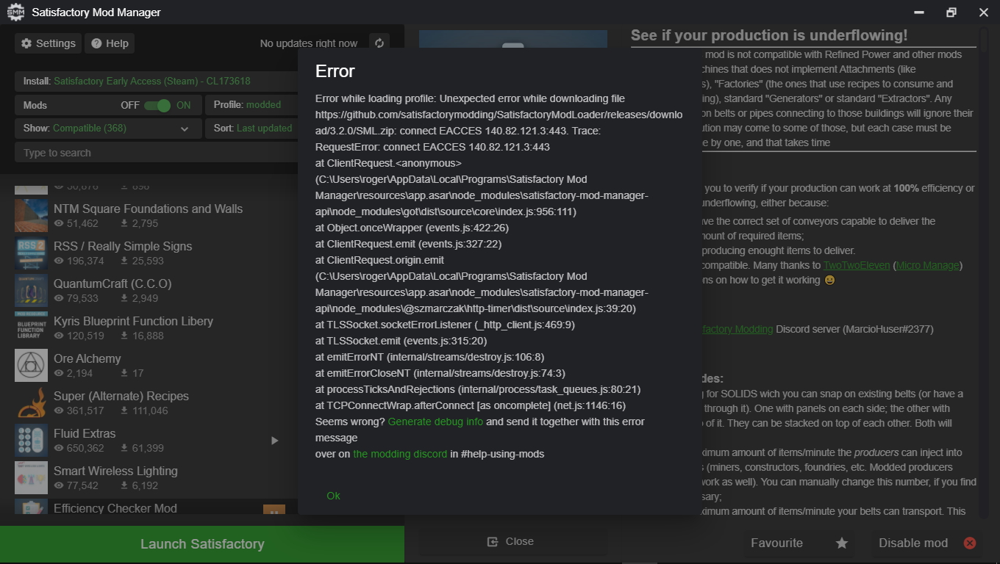

Hi all, well since the 28/6/2021 and the v2.5.0 update, I have not been able to use the mod manager and every time I try to use it I get the same message.
I have uninstalled it, reinstalled so many times I gave up counting, I have even remove all my mods and game save, all to no effect it still keeps displaying the same message.

Also I am not able to access discord to find help their.
I have finally found the cause of this and it is any incompatibility with with one of my security software programs ( Malwarebytes ).